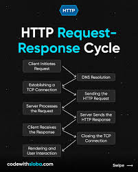

Project Abstract
This project explores the evolution of the Hypertext Transfer Protocol. Based on research from IT 3203, this site documents the transition from HTTP/0.9 to the modern, high-speed HTTP/3 protocol.
Technical Protocol Comparison
A key finding in this research is the transition from text-based protocols to binary-framed protocols for increased efficiency.
| Feature | HTTP/1.1 | HTTP/2 | HTTP/3 |
|---|---|---|---|
| Transport Layer | TCP | TCP | QUIC (UDP) |
| Multiplexing | None | Fully Multiplexed | Improved (No HOL Blocking) |
| Encryption | Optional (TLS) | Required (Implicit) | Built-in |

Figure 1: Visualizing the HTTP communication cycle.